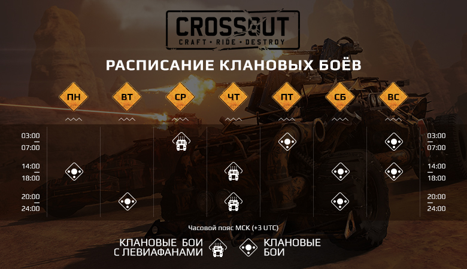
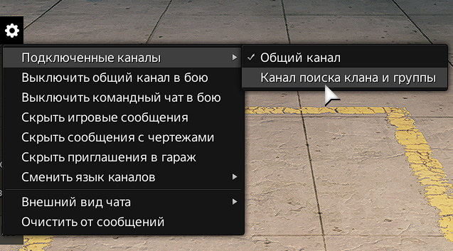
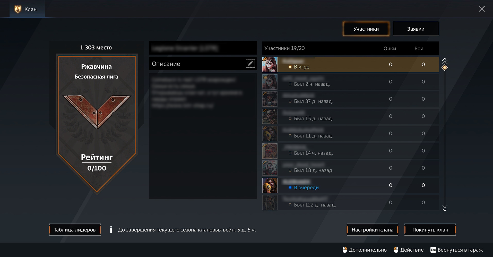

Время доступности Клановых Войн
Данное расписание носит информационный характер и может быть изменено. Мы рекомендуем обязательно проверять время старта нужной вам Потасовки, Клановых и Рейтинговых боев непосредственно в игре.
Создание собственного клана
Клан может создать любой игрок. Для того, чтобы зарегистрировать новый клан, вам необходимо иметь на своем игровом счету 200 металлолома. Если у вас уже есть указанная сумма - смело нажимайте «Создать клан»! Вы можете указать название, тег и описание клана. После того, как вы создадите свой клан, вы автоматически становитесь его лидером и вам становятся доступны все функции управления кланом.
Вступление в чужой клан
В клан вас могут только пригласить. Публикуйте свои заявки на вступление в специальном канале чата.
Управление кланом
Каждый клан имеет свои уникальные название, тег и описание. Максимальное количество человек в клане - 20. Помимо этого, у каждого клана есть свой отдельный чат, где его члены могут общаться между собой. У каждого клана есть лидер, который обозначается короной в списке участников. Лидер может быть только один; Лидер может менять название клана, его описание и настройки; Лидер может приглашать в клан и исключать из клана игроков; Лидер может покинуть клан только в том случае, если в клане никого, кроме него, не числится. При этом клан расформировывается; Если лидер клана не заходил в игру ни разу в течение месяца, лидерство передается следующему игроку, который находится в игре и имеет самое высокое звание; Для игры в Клановых боях наличие лидера в группе не является обязательным условием. Кроме того, лидер клана может назначать офицеров клана. Офицеры обозначаются двойной чертой в списке участников. Офицеров может быть больше одного; Офицер может менять описание клана и настройки клана; Офицер может приглашать в клан и исключать из клана игроков; Офицер может покинуть клан в любой момент; Для игры в Клановых боях наличие офицера в группе не является обязательным условием.
Клановые события
Клановые войны и Клановые противостояния — это особые режимы, в которых принимают участие только игроки кланов в формате боёв 4х4.
Ограничения
При выходе из клана на игрока накладывается штраф: он не может вступить в клан, будь то старый или новый, в течение трёх суток. Если игрок сыграл хотя бы один бой в течение сезона клановых войн (неделя с понедельника по воскресенье), то при вступлении в другой клан он не может принимать участие в клановых боях до окончания этого сезона.